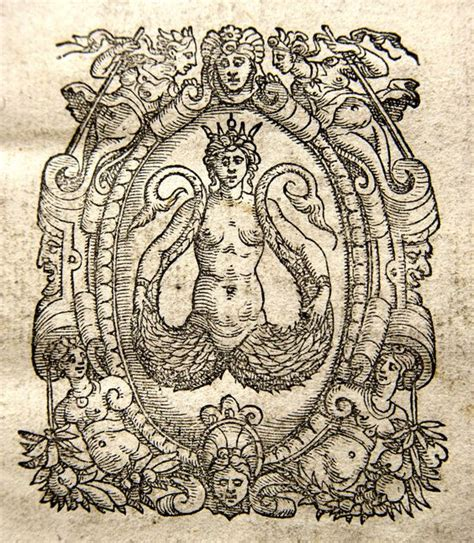

Melusine (French: [melyzin]) or Melusina is a figure of European folklore and mythology, a female spirit of fresh water in a sacred spring or river. She is usually depicted as a woman who is a serpent or fish from the waist down (much like a mermaid). She is also sometimes illustrated with wings, two tails, or both. Her legends are especially connected with the northern and western areas of France, Luxembourg, and the Low Countries. The House of Luxembourg (which ruled the Holy Roman Empire from AD 1308 to AD 1437 as well as Bohemia and Hungary), the House of Anjou and their descendants the House of Plantagenet (kings of England) and the French House of Lusignan (kings of Cyprus from AD 1205–1472, and for shorter periods over Armenia and Jerusalem) are said in folk tales and medieval literature to be descended from Melusine. One tale says Melusine herself was the daughter of the fairy Pressyne and king Elinas of Albany (now known as Scotland). Melusine's mother leaves her husband, taking her daughters to the isle of Avalon after he breaks an oath never to look in at her and her daughter in their bath. The same pattern appears in stories where Melusine marries a nobleman only after he makes an oath to give her privacy in her bath; each time, she leaves the nobleman after he breaks that oath. Shapeshifting and flight on wings away from oath-breaking husbands also figure in stories about Melusine. According to Sabine Baring-Gould in Curious Tales of the Middle Ages, the pattern of the tale is similar to the Knight of the Swan legend which inspired the character "Lohengrin" in Wolfram von Eschenbach's Parzival.
The three girls—Melusine, Melior, and Palatyne—grew up in Avalon. On their fifteenth birthday, Melusine, the eldest, asked why they had been taken to Avalon. Upon hearing of their father's broken promise, Melusine sought revenge. She and her sisters captured Elynas and locked him, with his riches, in a mountain. Pressyne became enraged when she learned what the girls had done, and punished them for their disrespect to their father. Melusine was condemned to take the form of a serpent from the waist down every Saturday. In other stories, she takes on the form of a mermaid. Raymond of Poitou came across Melusine in a forest of Coulombiers in Poitou in France, and proposed marriage. Just as her mother had done, she laid a condition: that he must never enter her chamber on a Saturday. He broke the promise and saw her in the form of a part-woman, part-serpent, but she forgave him. When, during a disagreement, he called her a "serpent" in front of his court, she assumed the form of a dragon, provided him with two magic rings, and flew off, never to return.